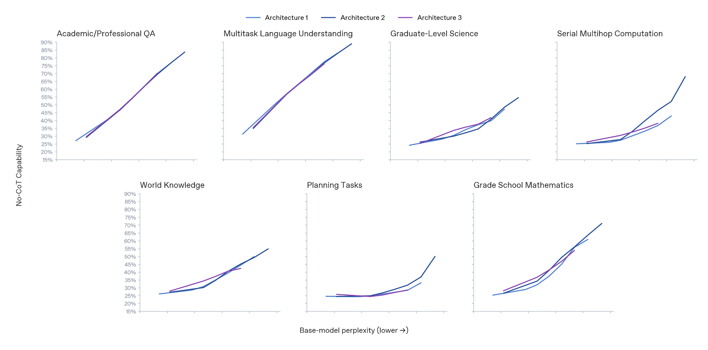

阅读导航：原帖解读 → 综合分析 → 研究设想
1. 先看整体：这些帖子分别在回答什么
| 阅读对象 | 原帖在谈什么 | 阅读重点 |
|---|---|---|
| Xinye / @vclee8 | 基模进展挤压传统课题，博士应重视数据与评测 | 定义真实缺口、提供可用评测，是一种有价值的研究资产 |
| RRRRRRRY / @R3YYY_evio | 商业实验室可能成为大学体系之外的研究载体 | 应看问题所有权和反馈条件，而不只看组织称谓 |
| Da7em / @Da7_Tech | 以私人接触和发布节奏批评部分实验室依赖蒸馏 | 将“蒸馏可行”与“某团队依赖蒸馏”的证据分开 |
| Benhao Huang / @huskydogewoof | 数据重复、训练 token 配比、架构效率、评测语料 | 训练和评测分布会影响结论；必须保留作者后来的纠正 |
| Wenlin Yao / @YaoWenlin | MSR 招聘自我改进与多任务 Agent 研究实习生 | 反馈、泛化、信用分配、训练环境是明确的研究接口 |
| Jeffrey Wang / @jeffreygwang | CoT 可监测性如何随模型训练变化 | 可见推理、实际计算和真实可监测性是不同对象 |
| Andrew Curran / @AndrewCurran_ | 转述 Anthropic 用模型移植 AMD 内核的案例 | AI 可能压低系统实现成本，瓶颈转向目标与验收 |
| 宝玉 / @dotey | 单一主会话与大量独立线程都不够好用 | 协调、深入干预、任务和成果检索需要同时设计 |
| Hao Zhang / @HaoZhang623 | 反对视频与世界模型被 LLM 淘汰的判断 | 数据条件、工具组合、世界动力学能力应分开讨论 |
| RyanLee / @RyanLeeMiniMax | 追问 Voxt 与 GPT Live 是否采用同一方案 | 先恢复被回复的 Voxt 发布帖，再讨论系统结构 |
| Karen Zhou / @karenzzhou | 感叹 Inkling 2 Small 的巨大评测表 | 宽评测有价值，但必须读版本、工具条件和验收对象 |
2. “博士只能做 benchmark”中，有洞察的部分是什么
2.1 恢复 Xinye 的完整论点
Xinye 的两条相连帖子包含三个层次。第一，通用模型迅速吸收原本由专用方法承担的能力，单纯增加模块、追逐小幅榜单提升的课题更难形成持续价值。第二，博士可以把领域问题转化为基模可训练、可评测的任务，并通过清楚的问题定义和传播形成影响。第三，他进一步提出一条职业设想：理解数据、建立好评测、获得基模团队认可，再走向数据创业。[S1]
后一条不是研究结论，而是作者观察到身边案例后提出的路径判断。他同时担心工业数据工作难以转化为个人学术声誉，也承认这种经历可能非常符合工业需求。这里的矛盾是组织价值、个人可归属成果与博士评价之间不总一致。
2.2 我的判断：应继承“问题定义”，不必继承“唯一出路”
有价值的 benchmark 至少完成三件事：指出现有系统在真实任务中哪里失效；把失效转化为别人可以重复检查的任务；证明测到的差异能解释实际使用差异。一个难题集合如果只是更难、更大，未必完成了这些工作。
例如，已有 agent 能把数据清洗脚本跑通，但会把测试集参与特征选择。若仅检查“最终有没有一个分数”，就奖励了错误目标；若提供隔离的数据划分、可追踪的访问记录和最终隐藏集，才有机会区分真正改进与信息泄漏。这个例子是本文自拟，说明任务、环境和验收器可以共同形成贡献，而不是说某现有 benchmark 已经采用这个设计。
DuPO、MAPO、CoP、R-PRM 等反馈研究提供了一个具体出发点：在缺乏昂贵人工标注时，怎样取得有意义的比较或检查信号。 但从候选文本评分走到研究 agent，还要回答：检查的是哪个动作或产物；可用参照来自哪里；错误信号如何改变下一次选择；最终是否改善未参与优化的任务。已有论文不会自动补齐这四步，也没有因此失去价值。
2.3 RRRRRRRY 给出了组织层面的另一种回应
RRRRRRRY 引用 Xinye，提出商业实验室可能承接部分研究职能，并以华为的人才与研究经历作类比。这是作者的历史评价与立场，不是本文核实的组织史，也不是对任何具体 offer 的推荐。[S2]
它有价值的提醒是：研究不必绑定唯一组织形式。但评价一个岗位，应把“能接近前沿”拆成实际条件：
| 条件 | 需要问到什么程度 |
|---|---|
| 问题所有权 | 是独立提出和检验问题，还是长期执行别人已定的方案？ |
| 反馈 | 谁审查实验和推理？多久能获得一次实质反馈？ |
| 资源可用性 | 算力、数据和工程支持能否用于研究者自己的课题，而非只存在于公司总量里？ |
| 成果归属 | 论文、代码、系统交付、推荐信和对外说明各有什么边界？ |
| 未来入口 | 做完一段工作后，能否清楚展示自己解决过什么困难？ |
这也说明为什么“进基模组洗数据就没有学术价值”过于绝对：数据工作的定义、反馈和归属安排不同，价值会很不同。反过来，品牌很强也不能保证具体岗位有上述条件。
3. 数据效率：从一句立场，走到可以复查的实验
3.1 Benhao 的原帖与后续纠正要一起读
原帖认为重复训练数据和很高的 tokens per parameter（TPP）在预训练中常见，并看好数据效率更高的架构；他最初还否定了 FineWeb-Edu 作为架构测试语料的价值。评论中，Ali Hatamizadeh 区分“数据分布偏向某些任务”和“不能可靠比较架构”。Benhao 随后承认，不能凭自己一次复现失败否定整个数据集，并将表述收窄为偏向知识密集任务。[S4]
另一条补充很具体：缩小数据集时必须保持各来源的混合比例。他自述曾直接取前缀而破坏配比，影响了 scaling 实验。[S4b] 因而不能把这组材料整理成“FineWeb-Edu 已被证明不适用”；作者的修正本身就是最重要的内容之一。
3.2 TPP、重复次数和过拟合不是同一个量
以下是教学算例。对一个 10 亿参数的稠密模型，如果训练共处理 1 万亿 token，则按这一口径 TPP = 1000。如果独特语料只有 1000 亿 token，全部语料约被看过十轮；如果独特语料接近 1 万亿 token，就可能几乎没有重复。只知道 TPP，无法推出重复了多少轮，更无法单独判定已经过拟合。
小模型多训练一些，有时是为了降低部署后的每次推理成本。是否值得，需要比较训练成本、部署调用量与推理成本。讨论 MoE 时还须说明分母是总参数还是激活参数，不能直接把不同口径的 TPP 放在一起。
3.3 分布为何能改变架构排序：一个可计算反例
假设两个模型在相同测试条件下得到如下准确率；这是自拟数字，不是 FineWeb 或某篇论文的实验。
| 模型 | 网页知识题 | 代码题 | 95% 网页＋5% 代码 | 50% 网页＋50% 代码 |
|---|---|---|---|---|
| A | 80% | 40% | 78.00% | 60.00% |
| B | 75% | 60% | 74.25% | 67.50% |
例如 A 的第一项加权分数为 0.95×80 + 0.05×40 = 78。两种配比下的领先者不同。这只证明排序可以依赖任务分布，不证明真实架构一定发生过反转。若要说明某个语料会误导架构选择，必须实际给出跨分布、跨规模和相近预算下的比较。
这一点对后训练研究同样直接：奖励在数学上更好，不等于在长文生成、工具动作或多语言上保持同样意义。验证器的可用性和错误类型，都随分布变化。小规模实验最值得提供的是清楚的机制证据和失效条件，而非直接宣布大规模胜负。
4. 自我改进 Agent：招聘帖暴露了哪些真实研究接口
4.1 Wenlin 的招聘帖具体在找什么
招聘对象是 Microsoft Research Redmond 的研究实习生，主题包括通过实验反馈改进策略／工具／工作流、多任务迁移、长期交互中的信用分配与恢复，以及自动生成任务和可验证反馈的训练环境。要求在读博士、较强一作论文记录，以及研究和实现能力。[S5]
申请地址为 wenlinyao@microsoft.com；原帖要求 CV、相关论文或项目链接、简短研究兴趣说明，邮件主题格式为 [2027 intern] Your name - university。这是一条可核实的机会线索；名额是否仍开放、起止时间、地点及资格细节尚未与招聘方确认。申请者的毕业时间、可用实习窗口与资格要求，需要另行确认。
研究接口：自监督反馈、RL、偏好优化、多语言迁移与过程评价，分别能与这些问题建立联系。更有说服力的申请材料，应给出一条清晰机制链和已有证据，而不是把所有项目统一改名为 Agent。实际匹配程度仍取决于具体课题、证据和岗位条件。
4.2 什么叫改进自己：改变对象必须明确
| 改变对象 | 一个具体变化 | 应看什么证据 |
|---|---|---|
| 上下文／记忆 | 下次任务检索到过去的错误与有效修复 | 相关经验是否被正确调用，错误是否减少 |
| 工具／工作流 | 提交前检查产物是否真实存在 | 相同模型在独立任务上是否更可靠 |
| 策略参数 | 从交互轨迹做 SFT 或 RL | 去掉额外提示后是否保持，并迁移到新任务 |
| 研究策略 | 发现原候选集之外的新问题或解释 | 是否提出可区分假设，实验能否改变判断 |
前面三项的提升不自动证明第四项。把更多已定义实验跑完，与发现值得研究的新问题，仍需要分开评价。
4.3 一个已有落地：Self-HPO
Wenlin 参与的 Self-HPO 交替优化 harness 与策略：当前模型从失败轨迹提出外部执行流程候选，固定模型比较候选；随后固定流程做 RL，训练中仍未成功的任务成为下一轮搜索材料。这里 harness 指决定上下文、动作执行、反馈和终止的外部程序。论文报告三项代码评测均值从 57.8% 升至 64.8%；数字为作者报告的实验结果。[S5a]
最直观的案例是，agent 已修改源码且现有测试通过，却把文字总结当作最终补丁提交。改进后的 harness 检查出补丁为空，把具体问题返回给模型；模型随后生成实际 diff 并完成提交。这展示了执行接口的价值，而不只是提示词变化。[S5a]
本文的因果解释：验收反馈如果明确指向“哪个对象不合格”，模型更容易采取有效修复。这里需要补齐的是交付物，不一定是重新学习整个问题。但个别案例只能解释机制，不能独立证明全部平均提升都来自这一因素。
进一步值得研究的是：能否将“最终失败”拆解成产物缺失、过程错误、约束违反、方法无效等可区分信号？拆分后是否更快改进，是否减少学到迎合评分器的行为？这些问题能接上过程评价，但需要真实状态或可信参照，不能只再加一个会写评语的 LLM。
5. CoT 监测：可见过程与实际行为的关系
5.1 三个量先分清
无 CoT 能力：不生成外显推理或工具调用 token 时的任务表现；这仍包含神经网络计算，并不是“模型没有思考”。CoT 可操控性：模型按要求改变推理文本的能力。真实可监测性：观察者能否据可见轨迹识别实际发生的行为。[S6]
教学例：从 x=3 开始，加 2、乘 4，若为偶数则减 7，答案为 13。模型直接选出 13，说明它不需要把每一步写出；模型能将推理全部改成大写，则说明一种文本控制能力。两者都没有直接回答“某次违规行为会不会被监测到”。
5.2 研究发现与关键限定
官方文章发现，预训练质量提升与无 CoT 表现相关；部分架构在相近困惑度下的规划／串行计算表现更好；RL 后 CoT 控制能力可上升；该特征也可通过教师生成数据传给学生。关键限定是：在一对能力相近模型上，更高可操控性没有对应更高的监测逃逸成功率。因此代理指标不能替代真实监测测试。[S6]

图中横轴向右为困惑度下降。前三类知识／语言任务的曲线较接近，串行计算与规划的差异更明显。架构名称被匿名化，曲线采用共同范围内插值；图没有公开足够信息让我们把某条线认定为某种循环架构。[S6]
5.3 对过程奖励和自监督信号的启发
我的判断：评价器看到的对象，与它真正约束的对象，必须对齐。 一个过程评分器若只读模型写出的说明，就可能奖励“解释合格”；如果最后的动作或产物不符合要求，仍不能算任务完成。反过来，一段简短或不符合人类习惯的推理，也不能仅凭可读性判定无效。
可以设计一个小实验：对同一任务固定最终产物，改变推理表述；再固定表述风格，改变一个关键动作或中间结果。比较评分器对两类变化的敏感性。理想的任务评价应对语气改写稳定，对会改变任务结果的变化敏感。这个实验测的是信号有效性，还没有证明评分器适合用于长期 RL。
对自监督反馈而言，还需再走一步：用该信号选择候选或训练之后，隐藏验收集是否变好？能识别差异、能选出更好候选、能训练出更好策略、能在新任务上保持，是四个不同的结果。
6. 蒸馏与基础设施：哪些东西容易复制，哪些不容易
6.1 Da7em 的帖子是一组主张，不是已完成调查
作者称某未具名中国实验室曾请他协助蒸馏，并以若干产品的发布间隔和自己的体验，推断部分实验室对外部强模型依赖很深。他同时主张研究者应更重视原创数据与差异化能力，也批评 Anthropic 的书籍数据处理行为。[S3]
这些私人接触缺少独立核实；发布日期、体验落差和输出相似，都不足以单独识别训练来源或证明限制蒸馏造成了进展放缓。本文不据此给任何具体团队定性，也不把其书籍相关指控写成确认事实。
不过，他提出的战略问题可以严肃讨论：如果主要学习目标是复现教师在现有输入上的行为，怎样得到教师尚未表现出的新能力？
教学例：教师在已有数学题上的正确解答，可以成为学生的 SFT 数据；学生在未见过的工具环境里怎样探索，则还需要覆盖相应状态的轨迹或反馈。仅加入更多同分布解答，不能保证解决新环境的问题。这不是蒸馏必然有上限的证明：学生仍可组合教师知识，并通过新数据、环境反馈或训练设计取得超出某个教师基线的表现。
对于反馈研究，更重要的区分是：监督是否只能来自外部强教师，还是也能来自原输入中的可验证信息、跨任务参照或环境结果？这是一条数据与反馈来源的研究问题，不是给某种训练手段贴道德标签。
6.2 Andrew 转述的 AMD 案例应该读到什么程度
原帖转述 Anthropic 路演：过去需要许多工程师工作数月的芯片适配，模型约三天便让 Claude 在 AMD 上运行，编写或移植了几乎全部相关内核。这是有出处的转述；严格计算生产率倍数，还需要完整原始视频、代码、硬件设置及性能验收记录；这些不在本文证据范围内。[S7]
我的解释：即使代码生成非常便宜，仍需有人定义数值正确性、速度目标、显存、稳定性和支持的输入形状。能启动一个算子、能运行模型、能达到预期吞吐、能稳定提供生产服务，是逐层增加的验收条件。
例如矩阵乘法候选实现，至少要在若干 shape、dtype 和数值范围上比对参考结果，再在同硬件、相同输入与同步计时条件下检查速度。这个小例子解释为什么“代码大多由 AI 写成”与“工程判断不再重要”之间没有直接等号。
因此，把系统经验与算法研究对立起来没有必要。真正值得保留的经验是理解失败、性能约束和验证方法；机械实现的成本下降，可能反而提高这类经验的使用频率。
7. 宝玉的主会话与线程：人怎样继续掌握任务
宝玉指出两端各有问题：只有主会话，难以进入子任务补充信息；全部独立 session，又要人自己记住各自在干什么。他主张主入口负责协调，具体任务可以展开干预。后续还补充，应从聊天中沉淀可检索的任务与成果，而不是让它们埋在长对话里。[S8]
这既是 UI 问题，也是 agent 状态管理问题。一个可用系统应知道：当前目标是什么、某句话修改哪个任务、子任务用了哪个版本的上下文、成果在哪里、结论由什么支持。否则界面再简洁，也可能只是把管理成本藏起来。
本文自拟例子：研究者同时让系统读论文、画图和改稿，随后说“图里别写已经证明”。如果协调器只把这句话当闲聊，绘图任务可能继续输出旧结论；如果它同步到相关任务，并让子任务回报改动，干预才真正生效。这里最该测的是信息是否送达并改变对应产物，而不是有多少 agent 在运行。
可以用五项记录让系统可追踪：任务目标、输入版本、关键证据、进行状态、最终产物。主会话显示变化与例外，细节页保存执行轨迹，用户能直接纠正。这个设计是本文建议，并非原帖已经实现的系统。
对自主科研尤其重要的是，协调器不能只汇总“多数 agent 都同意”：如果它们共用来源、同一份错误假设或互相复述，这仍可能只有一份证据。保留独立假设、失败原因与来源谱系，比堆叠角色名称更有用。
8. 世界模型：工具展示、物理理解与数据条件
8.1 Hao 的论点比“世界模型不会死”更具体
Hao 认为 LLM 与视频／世界模型的差距部分来自数据条件；当前资源更适合哪条路线，会影响看上去的技术胜负。他借用 Hardware Lottery 的视角，提出类似的数据条件问题；同时指出，LLM 调用 Blender 等工具完成展示，并不等于所有能力已经进入 LLM 参数。他倾向于短期由 LLM 协调专业模型和工具，长期关系仍开放。[S9][R1]
这个观点保留了一个重要区分：一个系统完成任务，并不能直接确定其中哪个组件掌握了哪种能力。 数据是合理的解释候选，但帖子没有通过受控实验排除架构、目标、交互经验和评测方式等其他原因。
8.2 一个场景，三种不同能力
给出几张桌面照片，要求“把红方块放到蓝球后面，然后预测桌子晃动后会怎样”：
| 能力 | 输入与输出 | 如何检查 |
|---|---|---|
| 场景构造／渲染 | 图片或描述 → 几何、材质、视角 → 图像 | 是否满足位置、遮挡、颜色等要求 |
| 三维重建 | 多视角观测 → 一致的几何与相机关系 | 新视角是否一致，几何是否与观测相符 |
| 动作条件下的世界预测 | 当前状态＋动作 → 后续状态分布 | 是否预测真实运动、碰撞和不确定性 |
这是教学例。LLM 写 Blender 脚本，能够正确完成第一项的一部分；调用重建工具，可能完成第二项。第三项仍需要物体和环境信息、动力学知识或交互反馈。反过来，视频模型生成一段逼真的晃动，也不自动证明它能预测真实动作后果。
因此，判断一个方向是否被通用模型替代，先固定要交付的能力。对自监督研究，可能的连接是跨视角、时间或动作后的可检查一致性；但一致性也可能由“所有视角都错得一致”满足，最终需要真实观测或任务结果来锚定。这里是一条可探索思路，尚无本文实验。
9. RyanLee 的追问：Voxt 到底是什么结构
RyanLee 原帖只有一句针对 GPT Live 的方案比较问题。沿回复链找到的对象是 SGLang Omni 团队发布的 Voxt 2.0。它的主流程是语音识别，再用语言模型清理、翻译或回答，最后将文字插入应用或放入可继续对话的卡片；语音模型可以在设备端运行。项目 2.1 的架构文档另有一项版本变化：处理识别文本的语言模型走远端、兼容 OpenAI 接口的服务，早先的本地语言模型进程已经移除。语音识别在本地并不代表后续的文本处理也在本地。[S10][S10a]
音频 → ASR 文本 → LLM 清理／翻译／回答 → 应用中的文字或结果卡片。
这给出了可确认的结构。原帖中的 GPT Live 没有足够明确的项目链接，不能据此断言二者内部方案相同。尤其不能把这种文字中转的语音工作流，直接说成原生音频到音频的全双工对话系统。
9.1 “等待减少 92%”具体减少了什么
官方 README 与评测记录提供一个 4 分 46 秒录音的例子：M4、24GB Mac 上，停止说话后的等待从 32.3 秒降到 2.6 秒；主要变化是边录边分段识别，将工作提前到录音过程中。减少比例为 (32.3−2.6)÷32.3≈91.95%。这是录音后的等待指标，不是整段交互时间。[R2]
若只把录音和最后等待相加，318.3 秒变为 288.6 秒，减少约 9.33%。这同样不是完整端到端性能报告，因为还未计入 LLM 清理等阶段。评测使用合成录音，记录也提示设备负载会影响时间；宣传帖提到 M1 可运行，不等于这组 M4 数字在 M1 上得到验证。
对语音后训练的启发是：体验改进可能来自模型、切分策略、时序调度和失败恢复。比较时要分别测识别准确率、停止后的等待、错误纠正和语义保真。模型把语气修得更自然，却改掉否定词、数字或技术术语，就是一个独立失败。
可自拟这样的验收句：“不是把学习率改成 0.01，是 0.001；先别启动训练。”检查最终文本是否保留数值、纠正关系和禁止立即执行的意思。它与单纯统计字符错误率有关，但不是同一个目标。
10. Karen 的巨大评测表：怎样读出能力，而不是被面积震住
10.1 实际来源和覆盖范围
Karen 转发的是 Ziqiao Ma 关于 Inkling 2 Small 模型卡补充评测的消息。其讨论对象是 Thinking Machines 的官方模型卡。当前表含 13 个模型列、91 个带结果的条目行，覆盖代码、自动研究、工具、专业工作、视觉、推理、长上下文等；这个计数排除参数行和分组行，成对指标仍按一行计算。[S11][R3]
“表很大”说明报告覆盖面宽，不自动说明所有任务独立、所有结果同口径，或模型全面领先。以下数字按 2026 年 11 月 15 日的官方模型卡版本记录；原帖旧截图与这一版本是否逐格一致，不在本文核实范围内。
10.2 先用一项真实任务理解评测对象：PostTrainBench
官方任务是让 CLI agent 对指定小型基础模型做后训练。例如按官方任务模板，可具体化为“提升 Qwen3-1.7B-Base 在 GSM8K 上的表现”。agent 得到终端、网络、训练软件、评测脚本、一张 H100 和最多十小时；最后必须在 final_model 目录交付可加载模型。[R4]
一个合理的执行示意是：先验证原模型与评测能运行，选取合规训练数据，实施训练，在预算内比较候选，保存最优 checkpoint。最终由外部评测脚本给这个 checkpoint 打分，并审查数据使用和模型来源。这是执行示意，不是模型实测轨迹。
被评分的主要对象是训练后的小模型，不是 agent 写出的研究总结。任务允许在已定义目标上优化，不能据此直接推定 agent 擅长提出新科研问题。官方 v1.2 已移除 BFCL 并修正部分评分漏洞，不能把旧版与新版聚合分数混用。[R4]
10.3 当前表里的几个有解释价值的对照
| 条目 | Inkling 2 Small 报告值 | 能说明什么 |
|---|---|---|
| ScreenSpot Pro：原始／允许 Python | 83.8%／92.0% | 工具条件下高 8.2 个百分点；这是界面定位评测 |
| BabyVision：原始／允许 Python | 68.6%／93.6% | 同一模型的系统配置会显著影响报告表现 |
| PostTrainBench v1.2 | 31.9% | 有后训练工作流能力；本表 GLM-5.3-Flash 为 36.8%，并非此项第一 |
| Terminal Bench v2.1／v4.0 | 81.3%／13.1% | 版本与 harness 同时改变，不能相减来估计能力退化 |
以上均为官方模型卡报告值，未独立复现。[R3] ScreenSpot Pro 的任务是根据截图和自然语言要求定位界面元素，检查预测位置是否落在目标框内；不等于完成整个应用操作流程。该表还说明了大图缩放规则，因此图像预处理也属于协议。[R5][R3]
更实用的阅读顺序是：先读请求与交付物，再看工具和预算，然后读评分器与版本，最后才看分数。 表里用百分数、成对结果、积分或排名评分混合呈现时，不能直接求一个“总平均”。多项来自相近任务的数据，也不能当作同等数量的独立能力证据。
这张表与前面的 benchmark 讨论形成呼应：真正缺少的未必是更多题，而可能是能区分“靠工具成功”“参数中学会”“换环境还能做”“最终产物合格”的任务和协议。
11. 深层联系：执行越便宜，哪些东西反而越重要
本文的核心判断：当执行越来越便宜，发现值得研究的问题、持续获得能纠正自己的反馈，会变得更重要。
这不是十一条互不相关的新闻。可以把它们放在同一条研究链上：
真实问题 → 数据与任务分布 → 可检查的反馈 → 模型／工具／工作流更新 → 独立验收 → 新的问题。
商业实验室讨论关心谁能提供整条链的资源；benchmark 讨论关心怎样把问题变成可比较对象；自我改进关心怎样利用反馈更新系统；CoT 和蒸馏讨论则提醒：观察到的文本与分数，并不自动等于我们想测量的能力。
以下是基于前述材料提出的综合解释和可检验预测，并非十一位作者共同认可的结论。最重要的变化可以概括为：执行能力提高 → 可以尝试的方案增多 → 选择与验收承受更强压力 → 原来被执行困难遮住的判断问题暴露出来。
11.1 技能会被替代，问题所有权与反馈条件不会自动消失
Xinye 担心基模吸收细分能力，Andrew 转述模型快速完成内核移植，二者在不同层面指向实现门槛下降。但由此跳到“专业积累失去价值”还缺一环：一个领域的成本究竟主要花在实现、定义问题，还是辨别实现是否有效？[S1][S7]
用一个串行工作流的教学例说明。一次研究循环原来需要 2 小时明确问题和验收、8 小时执行，共 10 小时；执行加快到 0.5 小时后，循环变成 2.5 小时，整体快 4 倍，并没有快 16 倍。如果明确问题与验收原本需要 8 小时，同样的执行进步只让总时间从 16 小时降至 8.5 小时，约快 1.88 倍。这里假设各阶段串行、质量与其他工作量不变；实际多方案并行会改变数字，却不会消除剩余瓶颈。
因此，代码生成变便宜之后，熟悉系统失败方式、数据分布、数值正确性和性能约束的人，可能更容易验证更多想法。反过来，只拥有一套可复用实现、缺乏独立问题与验收条件的项目，更容易被通用工具覆盖。专长的价值要看它帮助研究者作出什么判断，不能只看多少代码还需亲手写。
这也改变了 Data/Bench 的含义。静态题库容易被反复适配；持续接触真实失败、产生新任务、辨认错误并把反馈接回训练，则是更长久的研究条件。值得争取的不是“有一个 benchmark”的标签，而是对这条循环的实质参与。
还必须区分研究价值与个人收益。提供优秀评测，不保证获得算力、署名或后续问题所有权；这些取决于合作与组织安排。因此“做 bench → 被看见 → 获得资源”是可能路径，不是自然规律。商业实验室有资源优势，也可能把研究者固定在数据维护中；大学有独立性空间，也可能缺少及时反馈。组织名称本身不能替代这些条件。[S1][S2]
可检验预测：若这条解释成立，在实现成本迅速下降的团队里，新的主要延迟应更多来自需求不清、评测不足和结果无法复核；能访问真实失败并修改验收流程的人，其贡献会比单纯增加候选数量更明显。若瓶颈仍是算力、基础算法或物理实验吞吐，这个判断就不能照搬。
11.2 强模型不仅会解决更多题，也会更有效地暴露评分漏洞
PostTrainBench v1.2 修复了一个直接例子：旧 HumanEval 判分可能把程序在测试前正常退出当作通过。问题不是代码会不会运行，而是“进程正常结束”这个可观察量，被错误地等同于“函数正确”。[R4]
可以把可见分数写成 \(R = G + B + \varepsilon\)：\(G\) 是真正想要的能力，\(B\) 是评分器偏差或可利用的捷径，\(\varepsilon\) 是测量噪声。这是解释框架，不要求实际能够把三项精确分解。选择最高 \(R\) 的方案，会同时偏好真正能力、评分捷径和幸运噪声；当生成候选更便宜时，后两者更值得主动检查。
教学例：假设每次独立尝试有 0.1% 概率碰到一个“实际错误但被判通过”的方案。至少碰到一次的概率为 \(1-(1-0.001)^n\)：100 次约 9.5%，1,000 次约 63.2%，5,000 次约 99.3%。这不是任何现有模型的实测失误率；独立假设也不适用于全部自适应搜索。它说明的是：在小规模抽样中近乎看不见的漏洞，可能在大规模优化中变得决定性。 针对性搜索还可能使每次遇到漏洞的概率上升。
由此产生一个比“评测要准确”更强的要求：反馈必须在被反复优化之后仍有意义。 在固定候选集上能正确排序，是第一步；让模型长期追求这个分数后仍提高外部任务表现，是更难的一步。增加多个同源 LLM 裁判，也不自动增加独立证据：它们可能共同偏好同一种话术，或漏掉同一类状态错误。
对 benchmark 的判断也应改变。新的价值不只是添加困难题，而是揭示已有指标在哪种优化压力下开始失真，维护真正独立的验收，定期引入新任务与新失败类型。隐藏答案有帮助，但反复根据隐藏集结果调整方案，也会逐渐消耗其独立性。
可检验预测：固定生成模型，提高候选数或优化轮数，若可见分数持续上升而独立验收趋平甚至下降，就出现了反馈与真实目标可能脱节的信号。但平台期也可能来自成功率天花板、候选质量不足或抽样误差，不能仅凭两条曲线定性。需要结合具体失败、候选池中是否已有正确答案、重复实验和新任务来区分评分漏洞、噪声选择与分布过拟合，更不能统称为模型“学会欺骗”。
11.3 自我改进的关键，是新增了什么约束，以及改进留在哪里
“自己反思、自己造数据、自己训练”描述了执行者，却没有回答有效信息来自哪里。已有知识的重新组合、搜索和计算，可以找到原先没找到的解；不引入新外部数据，也可能取得实际进步。但如果同一套错误假设同时决定生成、评分和纠错，多跑几轮并不保证发现这个共同错误。
应具体追踪两条线：约束来自原输入真值、环境执行、独立任务还是模型自己的判断；收益留在参数、外部流程、记忆还是工具里。 这比把系统称作“自我进化”更有解释力。蒸馏、验证式搜索与环境学习可以组合使用，不能由“用了教师”推断没有创新，也不能由“没有教师”推断反馈可靠。[S3][S5a]
还有一个更隐蔽的问题：训练数据传递的不只是答案质量。 OpenAI 用下游能力相近、CoT 可操控性不同的两个教师，在相同提示分布和 token 预算下生成数据；学生经 SFT 后仍表现出对应的可操控性差异。这个有限对照说明，仅按正确率挑选教师或合成数据，不能保证学生其他行为特征等价。它不意味着蒸馏必然不安全，而是提示我们明确哪些行为需要一并检查。[S6]
Self-HPO 提供了一个有用的实际分解。下表取自论文在 SWE-Bench Verified 上的交叉测试；数字是作者报告的完成率均值，\(P_2\) 和 \(H_2\) 是第二轮后的策略与流程。[S5a]
| 完成率 | 初始策略 \(P_0\) | 更新策略 \(P_2\) |
|---|---|---|
| 初始流程 \(H_0\) | 61.0% | 64.4% |
| 更新流程 \(H_2\) | 64.5% | 69.5% |
更新策略在旧流程中保留 3.4 个百分点收益；更新流程给旧策略带来 3.5 个百分点；联合提升 8.5 个百分点，均值上的交互项是
个百分点。这支持“两部分均有可迁移收益，组合更好”的解释。交互项是这一设置下的描述量，不能仅凭这四个均值宣称统计显著或适用于所有任务。
更深一层是：流程可以改变一个问题是否具有可学习的成功轨迹。 在“做对了修改但没有提交补丁”的案例中，补丁检查把本来会终止的失败转成一次具体纠正。它既提高当前成功率，也可能让后续训练看到原先得不到的成功样本。论文案例表明前一层机制，后一层的普遍程度仍需实验。[S5a]
教学例：一次采样成功率从 2% 提高到 10%，每组采 8 条时，至少一条成功的概率从 \(1-0.98^8 \approx 14.9\%\) 升到 \(1-0.9^8 \approx 57.0\%\)。在依赖组内成功／失败差异的学习中，这可能显著增加有用比较。假设组内采样独立；“出现成功”本身仍不保证梯度正确或泛化。
这使一些看似工程的问题具有研究含义：反馈在什么时间出现、指向什么对象、允许什么恢复动作，会改变训练能接触到的轨迹分布。不过，增加一个补丁检查不自动构成新算法；有研究增量的是解释、测量并推广这种可学习性变化。
反馈还可能随能力增长而过时：初期最常见的是交付缺失，修好后主要问题可能变成错误定位或修改副作用。Self-HPO 根据上一轮训练仍未解决的任务更新搜索集，体现了对这种变化的适应。[S5a] 但“最难”也不自动等于“最值得学”：任务可能缺少信息、评分本身有错，或完全超出当前预算。自我改进系统还要学会区分可学习的困难与无效消耗。
11.4 Research taste 的稀缺性，在于知道什么结果会改变下一步
自动研究系统可以把一个既定目标优化得很好，却始终追逐错误指标。PostTrainBench 检验有边界的训练工作流；Self-HPO 优化给定任务上的策略与流程。二者都提供重要能力证据，但不直接证明系统能发现值得研究的新问题。[S5a][R4]
一个具体区别是：下一次实验的价值，可能不在于分数最高，而在于它最能改变后续决策。 假设当前看到 6 个百分点提升，有两种解释：\(G\) 为真正泛化，\(L\) 为数据泄漏；暂给两者各 50% 概率。换一个学习率后又涨分，如果两种解释都预期会涨分，这次实验很难区分它们。
相反，设想在独立来源的新任务上重测，真泛化时有 90% 概率保留明显提升，泄漏时只有 10%。观察到保留提升后，贝叶斯更新给出
；若未保留则降至 10%。用信息熵度量不确定性，两种解释各半时为 1 bit，变成 90%／10% 后约为 0.469 bit，因此这次检查预期提供约 0.531 bit 信息。概率是示意设定，不是能从一条实验曲线直接读出的事实。
这不是说应该机械最大化信息量。一个无关紧要的问题也可以非常容易消除不确定性。好的判断还要包括：问题是否重要，某种结果是否会改变资源投入，检查成本多大，以及结论能推广到哪里。
而且，区分 \(G/L\) 仍只是诊断：真正的问题发现可能是提出原候选集之外的第三种解释，例如“收益只来自修改了解码设置，模型参数并没改善”。再往前一步，还包括发现一个此前没人要求测量、却决定系统实用性的维度。候选集的形成，本身就是研究能力的一部分。
因此，评价 research taste 至少要观察：系统能否自行提出有根据的竞争解释；能否选择让这些解释作出不同预测的实验；能否根据结果修改或停止路线；能否发现任务定义遗漏了什么。固定选项题只覆盖其中很小一部分，预置故障诊断也不能冒充完整的科学发现。
这个切入点仍没有穷尽 research taste。发现一个值得追求的新现象、发明解释它的概念、提出此前没有的方法，同样重要。例如，跨任务观察到“失败总发生在用户修改要求以后”，可以催生对依赖失效的新问题定义，而不只是继续比较更长上下文。这里的诊断实验用于建立可检验的起点，不应反过来把研究创造力定义为找漏洞。
可检验预测：一个强执行、弱研究判断的系统，会很快产出更多实验，却在矛盾证据出现后继续微调原路线；更强的系统应更早指出某项关键假设尚未成立，并用少量有区分力的检查改变后续计划。要按实际轨迹与结果评价，不能只看它能否写出这些原则。
11.5 可见的过程应该帮助核验，而不能成为唯一真值
CoT 研究提醒我们，模型能做的计算、愿意写出的内容，以及观察者能据此发现的问题，并不重合。原文也明确保留了代理指标与实际监测逃逸之间的差距。因此，不能把“更会控制推理文本”直接读成“更会隐藏恶意”。[S6]
我的进一步判断是：当模型越来越善于适配评判者，可见过程更适合作为待核验的证据，而不是完整因果记录。 文本仍能暴露思路、帮助定位问题；重要的是把它与实际动作、状态变化和最终产物连接起来。
例如，模型说“已将学习率改成 0.001，并且尚未启动训练”。只读这句话，至多知道它这样报告；读取实际配置，能确认数值；检查运行进程或作业记录，才能确认是否启动。三个证据对应三个不同的命题。“解释听起来合理”的评分，不能替代后两个检查。
对过程评价，可以做两组干预：保持动作与产物不变，只改解释风格；保持解释的流畅程度，改变关键数值、依赖条件或实际动作。若评分对前者很敏感、对后者不敏感，它就可能在主要测表达。对依赖语言推理的任务，过程内容本来就重要；应保持的是语义等价，而不是删去所有推理后要求分数不变。
进一步还要问：引入这类评分后，模型是否学会更准确地执行，还是更熟练地描述合格过程？一次评分的相关性、候选选择的收益、训练后的收益、换环境后的保持，必须逐级建立。 这是将过程研究推进到可靠学习的核心桥梁。
11.6 世界模型与工具系统的分工，取决于哪里还缺少可预测的状态
Hao 的帖子可以读作对一种替代叙事的反驳：语言模型会调工具，不意味着已经学会工具内部解决的所有问题。反过来，拥有视觉输入或生成逼真视频，也不意味着学会了动作如何改变世界。[S9]
考虑一个找物任务：语言模型理解“把抽屉里的杯子拿出来”，图像系统识别杯子，几何模块定位它，动力学模型预测拉开抽屉后物体怎样移动。一个系统可以把这些组件组织得很好，却依赖其中某个专用模块；这不是虚假的系统能力，但不等于所有能力都已内化到一个模型里。
这里与蒸馏、自我改进形成同一条问题：新的约束从哪里来？ 看见某个状态的数据，不一定约束了未执行动作的后果；仅用自己的生成结果再次训练，也可能保留一致但错误的动力学。可控交互、跨视角观测和外部测量能够提供不同约束，但它们有采集成本，也各有盲区。数据规模、数据覆盖和数据能排除哪些错误假设，不能互相替代。
因此，我更倾向于一个条件判断：短期内，能把语言规划、专用模型与工具接起来的系统有实际优势；一个专用模型是否长期有价值，要看它是否提供通用模型仍缺少的准确状态预测、效率或可验证能力。不能仅凭“LLM 调用了它”宣布它过时，也不能仅凭模态不同保证它永远不可替代。
11.7 长期 Agent 的难点，是保留可纠正的任务状态
宝玉希望主会话可以协调多个任务，同时允许深入子任务和检索成果。这不只是聊天界面偏好：它暴露了长期系统中的一个问题——摘要可能保留了结论，却丢失结论在什么条件下成立、后来又被谁改过。[S8]
教学例：主会话先要求配图写“已证明”，随后改成“待验证假设”。图稿子任务仍按旧要求完成，写作子任务却用了新措辞。两个子任务各自都可能流畅、完成度很高，合起来的成果仍互相矛盾。再加一个负责总结的 agent，若不核对版本与实际产物，只会把矛盾包装成一致的汇报。
所以值得保留的状态至少包括：当前目标、有效约束、未决问题、成果版本，以及修改要求影响了哪些依赖。原始轨迹可以按需展开，但不能用一段没有来源和版本的自然语言摘要取代全部状态。
我的预测：随着单个执行任务更容易完成，长期系统中因旧约束、错误依赖和成果未同步导致的失败占比可能上升。好的记忆机制应让系统在目标改变后修正行为，并让使用者查到修正是否落实；“记住更多文本”只是手段。这也为研究提供接口：测试纠正能否跨任务传播、旧结果能否失效，以及恢复是否真的完成。
11.8 控制什么变量，决定了实验究竟回答哪个问题
Benhao 讨论数据效率，OpenAI 则在相近困惑度下比较不同架构。两者不能直接拿来互相否定，因为实验固定的条件不同。[S4][S6]
| 比较方式 | 实际回答的问题 | 仍未回答什么 |
|---|---|---|
| 相同训练算力与数据条件 | 哪个模型在这个预算下学得更好 | 差异来自语言建模水平，还是其他能力结构 |
| 相同困惑度 | 语言建模水平相近时，专项能力是否仍有差异 | 达到这个困惑度分别用了多少算力和数据 |
| 相同训练 token 数 | 利用同样多数据时表现如何 | 每个 token 的计算成本、独特数据量和重复次数是否相同 |
| 相同推理成本与工具权限 | 部署预算内哪套系统更有效 | 优势来自参数、流程还是工具 |
例如，架构 A 只需 B 一半算力就达到相同困惑度，两者在该困惑度上的推理分数又相同。等困惑度比较没有发现额外推理优势，但 A 的效率优势仍然存在。反过来，A 的专项能力更高，也不证明它在给定总预算下更划算。这是教学例，未指认图中的任何匿名架构。
因此，研究对照不只是排除干扰，它同时定义了要估计的效应。 若关心“架构能否带来新的抽象与发现能力”，可以先测相近一般建模水平下的新任务迁移与组合能力，再测达到该水平的训练代价、推理代价及样本效率。单一的 perplexity 或单一榜单，不能同时回答能力机制与经济效率两个问题。专项分数的差异也只是机制线索，还需要具体任务与干预解释它究竟学会了什么。
12. 一个更有研究增量的切口：反馈能承受多大的优化压力
综合上述材料，一个值得优先检验的问题是：同一个自监督信号，在固定候选集上表现可靠，为什么被模型反复追求后可能失效？能否用有限的外部核验使它持续有效？ 这能将自监督反馈研究与长期 Agent 的实际失败连接起来。它是候选研究问题，尚未获得本文实验验证。
12.1 把已有方法重新放进可检验的问题中
模型需要掌握大量任务，逐任务提供人工指导成本高，因此希望从可用结构中构造可靠、可规模化的监督。向新场景迁移时，最值得保留的是寻找参照与检验信号含义的能力，而不是要求所有任务使用同一个公式。
| 已有视角 | 向更强优化推进时，应主动排查什么 | 一种有区分力的检查 |
|---|---|---|
| DuPO：用候选帮助重构留出信息 | 高重构分是否真的利用了候选；是否存在只靠保留上下文猜中目标的捷径 | 固定上下文，替换或打乱候选；观察分数是否按其信息价值变化 |
| MAPO：利用内部能力差异与跨任务参照 | 一致性分是否把共同错误或表面相似当成正确迁移 | 分别改变实体、否定和关键关系，或只改变等价表达，比较反应 |
| CoP：改变辅助条件，观察概率差分 | 差分是否反映目标维度，还是辅助信息的熟悉度、长度等混杂因素 | 控制辅助信息形式，改变内容及可靠性，并按不同 T 分别解释方向 |
| 过程评价／R-PRM 视角 | 高分步骤是否对应有效状态变化，还是只符合评价者偏好的写法 | 将过程文本与实际中间结果配对核验，并做语义保持的风格变换 |
这些是针对机制提出的待测问题，不是对已有论文错误的认定，也不要求把每项工作重新做一遍；它们共同指向一个更一般的研究对象：反馈与生成策略相互适应时，监督信号的含义如何保持。
12.2 先做选择实验，再决定是否值得投入训练
一个可控起点，是选择有实际产物和可执行验收的小型代码／配置修改任务，例如改数值但不得启动作业、修复函数但保留指定接口。先做约 20–30 个任务的探索性试验，目的是看清失败机制，不用于宣称覆盖通用 Agent 能力。需要扩大任务、重复测量之后，才能支持统计结论。
先固定生成模型与任务，比较三类反馈：只读解释的评分、检查产物／状态的评分、二者结合。每题候选预算取 1、4、16 等档位，从同一批候选的嵌套子集中分别选择，再用不向选择过程开放的验收核对。记录可见分、外部完成率、总成本、错误类型；各方法应使用相同生成候选，并把额外核验成本单独计入预算。
选择阶段的产物检查只覆盖预先规定的部分条件，例如补丁非空、接口存在或几条局部测试；最终验收检查剩余语义、隐藏输入与全部约束。两者不能复用同一套完整判分，否则实验只是在证明“用答案选择可以选对”。
同时保留两个基线：随机选一个候选，以及事后用验收真值从该批候选中选择的上界。后者只用于分析，不能反馈给实际选择器。若上界随候选数提高、实际选择却变差，才更明确地指向选择信号出了问题；若上界也不提高，就应先检查生成器是否产生了可用方案。固定候选池的最高可见分本来就随候选数单调不减，因此单看“搜索越多分越高”没有研究意义。
候选既要来自自然生成，也可加入可控对照：解释正确但文件没改、文件改对但接口坏了、含义相同而措辞不同。可控对照用来解释原因；自然候选用来检查问题是否确实在实际策略中发生。只在手造错误上成功，不能证明面对真实优化仍可靠。
关键观察不是某个评分器静态准确率高一两个点，而是：候选数量增长时，可见高分与实际成功是否开始分离？哪种检查能减少分离？ 还要把未见任务与未见错误类型分开留出，避免只是记住几种预设陷阱。
如果发现了稳定的分离，下一步才研究干预：在评分分歧大、疑似捷径或高分异常的候选上使用更昂贵的核验，将核验结果反馈给选择器或训练过程。增量应体现为相同总预算下的真实完成率、学习效率或跨错误类型的保持，而不是新增了多少检查模块。
若简单、廉价且完整的规则验证已经解决全部问题，就没有必要再造复杂评价模型。这个方向更有价值的条件，是完整验收昂贵、反馈稀疏或只能检查部分目标；必须证明结构化反馈提供了规则基线与通用 LLM 裁判之外的信息。选择实验有效以后，才有理由检验训练后是否仍有效，不能把前者当成后者的证据。
12.3 向自动研究延伸时，要允许系统质疑给定目标
再往前走，可以让系统处理“验证集涨分，但原因不明”的研究情境。记录它最初相信什么、预期不同实验得到什么结果，以及观察矛盾后实际改变了什么。部分情况预置泄漏或判分错误，另一些保留开放异常与真实失败，允许它自行发现问题。
这里应评价实际取得的证据、节省的无效投入、结论在新任务上的成立程度，并保留专家对问题重要性的判断。若只给固定故障列表和标准答案，测到的是诊断；若只奖励最终分数，可能惩罚那些暂时降分、却及时揭示错误方向的检查。自动研究的任务定义本身就需要研究，不能只加长 agent 运行时间。
13. 对选题与研究环境的判断
第一，值得保持的是研究问题的连续性，而不是任务名称不变。 自监督反馈与后训练积累，可以继续服务于“如何低成本地得到可信监督”。迁移到动作、代码或长期任务时，需要补齐状态、验收和恢复机制；这是一组具体待建立的能力，不意味着原有积累失效，也不意味着换个应用就已经掌握 Agent 研究。
第二，优先接近有真实失败、能修改反馈并观察后续学习的工作。 这比仅凭“Agent”“语音”“自动研究”这些标签判断前沿程度更有用。语音中的否定、数值、时序和编辑状态，本身就能提供有意义的问题；一个 Agent 岗位如果主要封装接口、不能接触训练与评测，也未必更有助于形成独立研究能力。
第三，benchmark、算法和系统不是互斥的职业身份。 一个好的研究项目可能先发现系统失败，再构造可检验任务，最后提出训练或推理方法。长期有价值的能力，是能解释这一链条并独立推进其中关键环节。方法研究仍然重要；重点是解决哪种新瓶颈，以及证据能否经受新模型和新分布的检验。
第四，判断平台时，应看六个月后能留下什么。 有区分度的问题、可复查的失败记录、可靠评测、方法与消融结果、懂该问题的合作者，以及研究者实际拥有的研究决策和成果归属，比一个无法兑现的“以后可以转方向”承诺更具体。
| 交流时值得查清的条件 | 它真正影响什么 |
|---|---|
| 能否接触真实失败样本，数据怎样进入下一轮实验 | 是否拥有持续得到新信息的入口 |
| 研究者能决定哪些问题、实验和停止条件 | 是否在形成独立研究判断 |
| 验收由谁做，是否独立于训练反馈 | 结果能否被信任，以及谁能纠正它 |
| 算力、数据、导师反馈与合作节奏是否落实 | 想法能否经历足够快、足够深入的检验 |
| 成果归属、论文空间和下一阶段职责如何安排 | 本次投入能否形成可带走的能力与证据 |
Wenlin 的招聘帖在反馈、多任务泛化和长期交互上提供了具体线索，因此值得纳入了解范围；它不证明岗位条件、实习时间或最终匹配已经成立，也不要求现在决定离开现有方向。[S5]
第五，这些帖子不足以证明某条路线必胜，却足以改变提问方式。 与其问“哪个方向不会被大模型取代”，更有用的问题是：“随着模型增强，这个方向中哪些问题会消失，哪些新失败会暴露；我能否接触它们、作出判断，并获得可靠反馈？”前一个问题容易被每次产品发布牵着走；后一个问题更接近可持续的研究选择。
14. 证据边界与资料索引
本文围绕 2026 年 11 月的一组 X 帖子及其相关论文、项目文档展开。原帖用于恢复各作者的主张；官方论文、代码文档与模型卡用于核对机制和报告数字。教学例、因果解释、可检验预测和候选研究方案属于本文分析，不能视作已经开展的实验或已确定的个人计划。
本文未独立复现相关训练实验，也未完整核实路演演示与私人经历。Benhao 对语料判断的后续纠正、CoT 代理指标的限制、Voxt 等待时间的计量口径，以及模型卡与旧截图可能不同的版本范围，均在相应章节保留。争议性指控按原帖作者主张呈现，不作为机构定性的依据。招聘信息代表发帖时的内容，当前名额与具体条件需另行确认。
- [S1] Xinye 的 Data/Bench 帖及其引用的前帖。
- [S2] RRRRRRRY 的商业实验室观点。
- [S3] Da7em 的蒸馏讨论。私人经历与具体机构指控未独立核验。
- [S4] Benhao 的预训练原帖、明确纠正和语料适用范围澄清。
- [S4b] Benhao 的混合比例教训。
- [S5] Wenlin Yao 的MSR 2027 实习招聘帖。
- [S5a] Self-HPO 论文全文，尤其第 2、3.4、3.5 节、表 3 与附录 E；Microsoft Research 论文页。
- [S6] Jeffrey 的线程首帖和第十条限定；OpenAI 官方文章 What affects chain-of-thought monitorability across the model lifecycle?，含附录 A–D。
- [S7] Andrew Curran 的AMD 内核转述。未取得独立性能验证。
- [S8] 宝玉的主会话与线程原帖、任务与成果补充、任务入口补充。
- [S9] Hao Zhang 的世界模型讨论及被引用的方向替代观点。
- [S10] RyanLee 的追问。
- [S10a] 被回复的链接帖和 Voxt 2.0 发布帖。
- [S11] Karen 的评测表帖子及 Ziqiao Ma 的原始更新说明。
- [R1] Sara Hooker，The Hardware Lottery，2020；本文仅用其资源与技术路线相互影响的核心视角。
- [R2] Voxt README、架构、评测记录。
- [R3] Thinking Machines Lab，Inkling 2 Small Model Card。数字为 2026 年 11 月 15 日版本的官方报告值。
- [R4] PostTrainBench 官方项目与任务模板、当前规则与案例、v1.2 更新说明。主页仍有部分七项评测旧文字；当前范围按 v1.2 说明及仓库六项列表记录。
- [R5] ScreenSpot-Pro 原论文与官方评测入口。
相关研读：Agentic 训练年度深读；Meta-Harness 的领域落地：代码、科学研究与芯片设计；把结构变成奖励。